由于本文篇幅较长，故将目录整理如下
什么是Map
- 维基百科的定义
In computer science, an associative array, map, symbol table, or dictionary is an abstract data type composed of a collection of (key, value) pairs, such that each possible key appears at most once in the collection.
说明：在计算机科学中，包含键值对（key-value）集合的抽象数据结构（关联数组、符号表或字典），其每个可能的键在该集合中最多出现一次，这样的数据结构就是一种Map。
01
操作
对Map的操作主要是增删改查：
在集合中增加键值对
在集合中移除键值对
修改某个存在的键值对
根据特定的键寻找对应的值
02
实现
Map的实现主要有两种方式：哈希表（hash table）和搜索树（search tree）。例如Java中的hashMap是基于哈希表实现，而C++中的Map是基于一种平衡搜索二叉树——红黑树而实现的。以下是不同实现方式的时间复杂度对比。
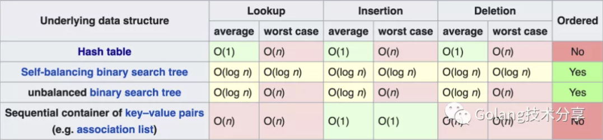
可以看到，对于元素查找而言，二叉搜索树的平均和最坏效率都是O(log n)，哈希表实现的平均效率是O(1)，但最坏情况下能达到O(n)，不过如果哈希表设计优秀，最坏情况基本不会出现（所以，读者不想知道Go是如何设计的Map吗）。另外二叉搜索树返回的key是有序的，而哈希表则是乱序。
哈希表
##
由于Go中map的基于哈希表（也被称为散列表）实现，本文不探讨搜索树的map实现。以下是Go官方博客对map的说明。
One of the most useful data structures in computer science is the hash table. Many hash table implementations exist with varying properties, but in general they offer fast lookups, adds, and deletes. Go provides a built-in map type that implements a hash table.
学习哈希表首先要理解两个概念：哈希函数和哈希冲突。
01
哈希函数
哈希函数（常被称为散列函数）是可以用于将任意大小的数据映射到固定大小值的函数，常见的包括MD5、SHA系列等。
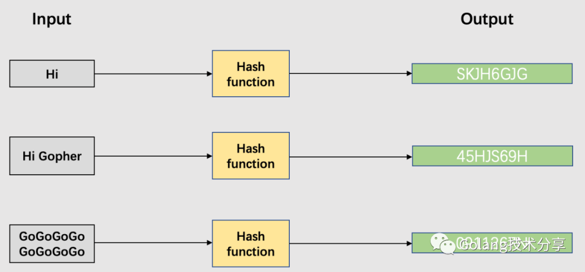
一个设计优秀的哈希函数应该包含以下特性：
- 均匀性：一个好的哈希函数应该在其输出范围内尽可能均匀地映射，也就是说，应以大致相同的概率生成输出范围内的每个哈希值。
- 效率高：哈希效率要高，即使很长的输入参数也能快速计算出哈希值。
- 可确定性：哈希过程必须是确定性的，这意味着对于给定的输入值，它必须始终生成相同的哈希值。
- 雪崩效应：微小的输入值变化也会让输出值发生巨大的变化。
- 不可逆：从哈希函数的输出值不可反向推导出原始的数据。
02
哈希冲突
重复一遍，哈希函数是将任意大小的数据映射到固定大小值的函数。那么，我们可以预见到，即使哈希函数设计得足够优秀，几乎每个输入值都能映射为不同的哈希值。但是，当输入数据足够大，大到能超过固定大小值的组合能表达的最大数量数，冲突将不可避免！（参见抽屉原理）
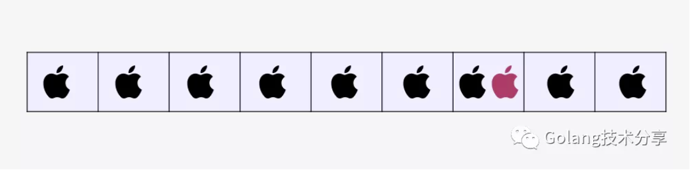
抽屉原理：桌上有十个苹果，要把这十个苹果放到九个抽屉里，无论怎样放，我们会发现至少会有一个抽屉里面放不少于两个苹果。抽屉原理有时也被称为鸽巢原理。
比较常用的Has冲突解决方案有链地址法和开放寻址法。
在讲链地址法之前，先说明两个概念。
- 哈希桶。哈希桶（也称为槽，类似于抽屉原理中的一个抽屉）可以先简单理解为一个哈希值，所有的哈希值组成了哈希空间。
- 装载因子。装载因子是表示哈希表中元素的填满程度。它的计算公式：装载因子=填入哈希表中的元素个数/哈希表的长度。装载因子越大，填入的元素越多，空间利用率就越高，但发生哈希冲突的几率就变大。反之，装载因子越小，填入的元素越少，冲突发生的几率减小，但空间浪费也会变得更多，而且还会提高扩容操作的次数。装载因子也是决定哈希表是否进行扩容的关键指标，在java的HashMap的中，其默认装载因子为0.75；Python的dict默认装载因子为2/3。
A
链地址法
链地址法的思想就是将映射在一个桶里的所有元素用链表串起来。
下面以一个简单的哈希函数 H(key) = key MOD 7（除数取余法）对一组元素 [50, 700, 76, 85, 92, 73, 101] 进行映射，通过图示来理解链地址法处理Hash冲突的处理逻辑。
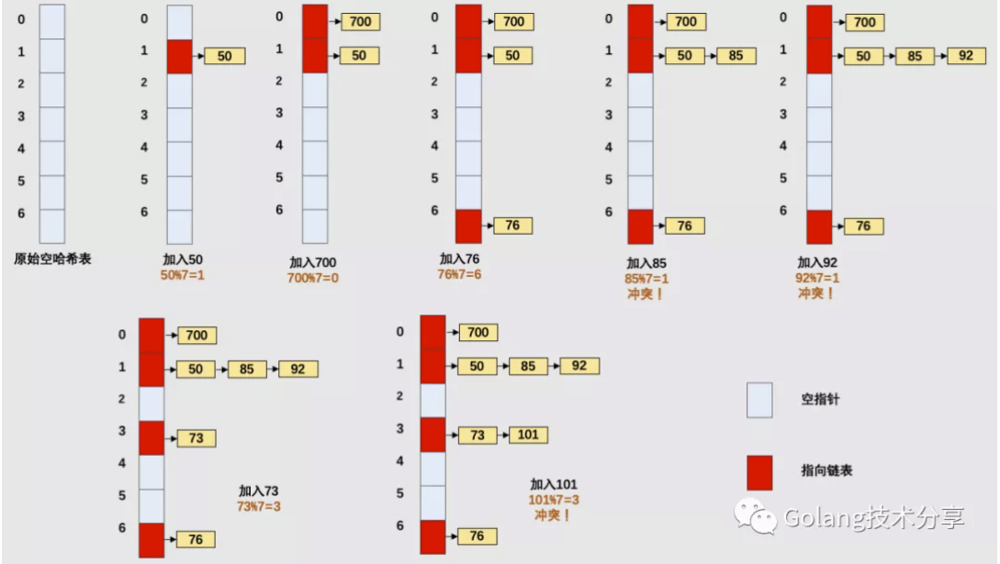
链地址法解决冲突的方式与图的邻接表存储方式在样式上很相似，发生冲突，就用单链表组织起来。
B
开放寻址法
######
对于链地址法而言，槽位数m与键的数目n是没有直接关系的。但是对于开放寻址法而言，所有的元素都是存储在Hash表当中的，所以无论任何时候都要保证哈希表的槽位数m大于或等于键的数据n（必要时，需要对哈希表进行动态扩容）。
开放寻址法有多种方式：线性探测法、平方探测法、随机探测法和双重哈希法。这里以线性探测法来帮助读者理解开放寻址法思想。
- 线性探测法
设 Hash(key) 表示关键字 key 的哈希值， 表示哈希表的槽位数（哈希表的大小）。
线性探测法则可以表示为：
如果 Hash(x) % M 已经有数据，则尝试 (Hash(x) + 1) % M ;
如果 (Hash(x) + 1) % M 也有数据了，则尝试 (Hash(x) + 2) % M ;
如果 (Hash(x) + 2) % M 也有数据了，则尝试 (Hash(x) + 3) % M ;
……
我们同样以哈希函数 H(key) = key MOD 7 （除数取余法）对 [50, 700, 76, 85, 92, 73, 101] 进行映射，通过图示来理解线性探测法处理 Hash 碰撞。
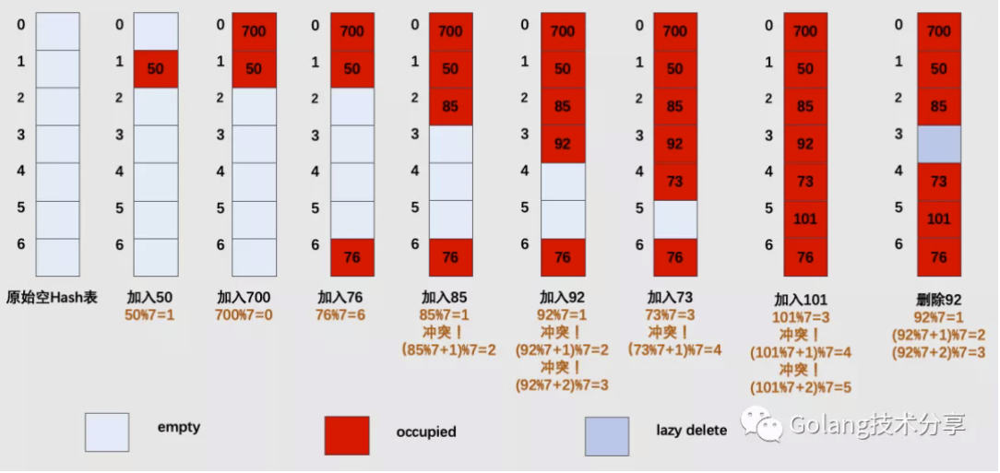
其中，empty代表槽位为空，occupied代表槽位已被占（后续映射到该槽，则需要线性向下继续探测），而lazy delete则代表将槽位里面的数据清除，并不释放存储空间。
C
两种解决方案比较
对于开放寻址法而言，它只有数组一种数据结构就可完成存储，继承了数组的优点，对CPU缓存友好，易于序列化操作。但是它对内存的利用率不如链地址法，且发生冲突时代价更高。当数据量明确、装载因子小，适合采用开放寻址法。
链表节点可以在需要时再创建，不必像开放寻址法那样事先申请好足够内存，因此链地址法对于内存的利用率会比开方寻址法高。链地址法对装载因子的容忍度会更高，并且适合存储大对象、大数据量的哈希表。而且相较于开放寻址法，它更加灵活，支持更多的优化策略，比如可采用红黑树代替链表。但是链地址法需要额外的空间来存储指针。
值得一提的是，在Python中dict在发生哈希冲突时采用的开放寻址法，而java的HashMap采用的是链地址法。
Go Map 实现
同python与java一样，Go语言中的map是也基于哈希表实现的，它解决哈希冲突的方式是链地址法，即通过使用数组+链表的数据结构来表达map。
注意：本文后续出现的map统一代指Go中实现的map类型。
01
map数据结构
map中的数据被存放于一个数组中的，数组的元素是桶（bucket），每个桶至多包含8个键值对数据。哈希值低位（low-order bits）用于选择桶，哈希值高位（high-order bits）用于在一个独立的桶中区别出键**。**哈希值高低位示意图如下
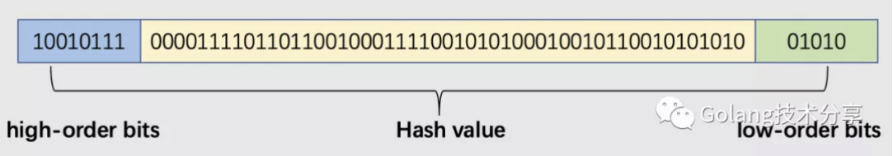
本文基于go 1.15.2 darwin/amd64分析，源码位于src/runtime/map.go.
- map的结构体为hmap
1 | 1// A header for a Go map. |
- mapextra的结构体
1 | 1// mapextra holds fields that are not present on all maps. |
- bmap结构体
1 | 1// A bucket for a Go map. |
bmap也就是bucket（桶）的内存模型图解如下（相关代码逻辑可查看src/cmd/compile/internal/gc/reflect.go中的bmap()函数）。
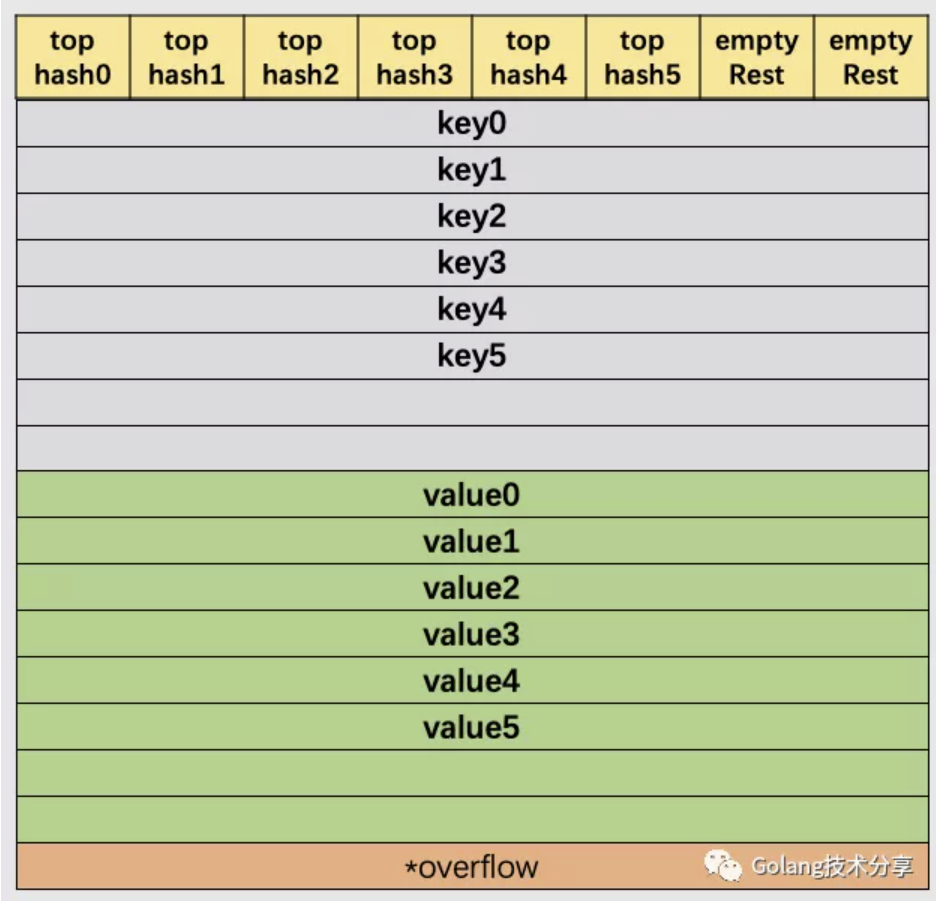
在以上图解示例中，该桶的第7位cell和第8位cell还未有对应键值对。需要注意的是，key和value是各自存储起来的，并非想象中的key/value/key/value…的形式。这样做虽然会让代码组织稍显复杂，但是它的好处是能让我们消除例如map[int64]int所需要的填充（padding）。此外，在8个键值对数据后面有一个overflow指针，因为桶中最多只能装8个键值对，如果有多余的键值对落到了当前桶，那么就需要再构建一个桶（称为溢出桶），通过overflow指针链接起来。
- 重要常量标志
1 | 1const ( |
综上，我们以B等于4为例，展示一个完整的map结构图。
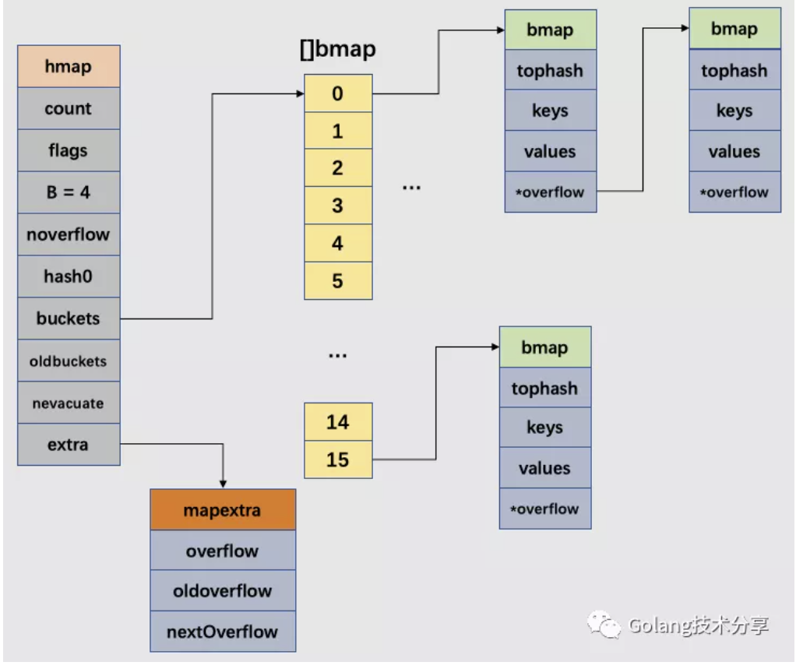
###
02
创建map
map初始化有以下两种方式
1 | 1make(map[k]v) |
对于不指定初始化大小，和初始化值hint<=8（bucketCnt）时，go会调用makemap_small函数（源码位置src/runtime/map.go），并直接从堆上进行分配。
1 | 1func makemap_small() *hmap { |
当hint>8时，则调用makemap函数
1 | 1// 如果编译器认为map和第一个bucket可以直接创建在栈上，h和bucket可能都是非空 |
分配buckets数组的makeBucketArray函数
1 | 1// makeBucket为map创建用于保存buckets的数组。 |
根据上述代码，我们能确定在正常情况下，正常桶和溢出桶在内存中的存储空间是连续的，只是被hmap 中的不同字段引用而已。
03
哈希函数
在初始化go程序运行环境时（src/runtime/proc.go中的schedinit），就需要通过alginit方法完成对哈希的初始化。
1 | 1func schedinit() { |
对于哈希算法的选择，程序会根据当前架构判断是否支持AES，如果支持就使用AES hash，其实现代码位于src/runtime/asm_{386,amd64,arm64}.s中；若不支持，其hash算法则根据xxhash算法（https://code.google.com/p/xxhash/）和cityhash算法（https://code.google.com/p/cityhash/）启发而来，代码分别对应于32位（`src/runtime/hash32.go`）和64位机器（`src/runtime/hash32.go`）中，对这部分内容感兴趣的读者可以深入研究。
1 | 1func alginit() { |
上文在创建map的时候，我们可以知道map的哈希种子是通过h.hash0 = fastrand()得到的。它是在以下maptype中的hasher中被使用到，在下文内容中会看到hash值的生成。
1 | 1type maptype struct { |
04
map操作
假定key经过哈希计算后得到64bit位的哈希值。如果B=5，buckets数组的长度，即桶的数量是32（2的5次方）。
例如，现要置一key于map中，该key经过哈希后，得到的哈希值如下：
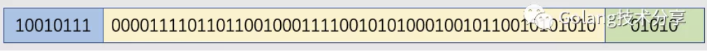
前面我们知道，哈希值低位（low-order bits）用于选择桶，哈希值高位（high-order bits）用于在一个独立的桶中区别出键。当B等于5时，那么我们选择的哈希值低位也是5位，即01010，它的十进制值为10，代表10号桶。再用哈希值的高8位，找到此key在桶中的位置。最开始桶中还没有key，那么新加入的key和value就会被放入第一个key空位和value空位。
注意：对于高低位的选择，该操作的实质是取余，但是取余开销很大，在实际代码实现中采用的是位操作。以下是tophash的实现代码。
1 | 1func tophash(hash uintptr) uint8 { |
当两个不同的key落在了同一个桶中，这时就发生了哈希冲突。go的解决方式是链地址法（这里为了让读者更好理解，只描述非扩容且该key是第一次添加的情况）：在桶中按照顺序寻到第一个空位并记录下来，后续在该桶和它的溢出桶中均未发现存在的该key，将key置于第一个空位；否则，去该桶的溢出桶中寻找空位，如果没有溢出桶，则添加溢出桶，并将其置溢出桶的第一个空位（因为是第一次添加，所以不描述已存在该key的情况）。
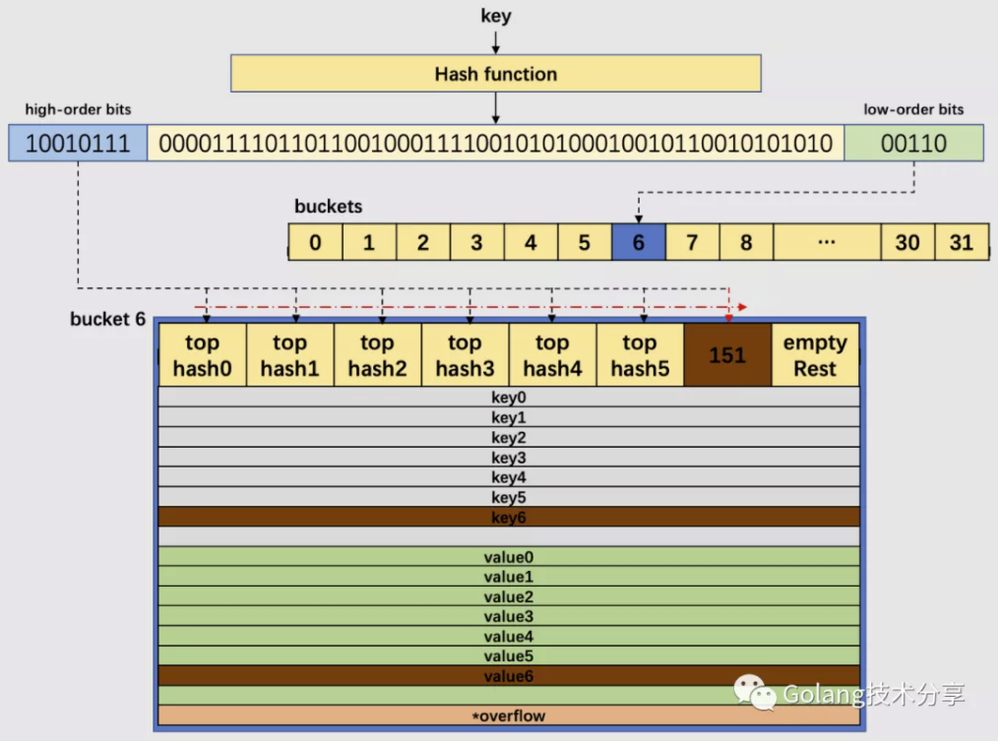
上图中的B值为5，所以桶的数量为32。通过哈希函数计算出待插入key的哈希值，低5位哈希00110，对应于6号桶；高8位10010111，十进制为151，由于桶中前6个cell已经有正常哈希值填充了(遍历)，所以将151对应的高位哈希值放置于第7位cell（第8个cell为empty Rest，表明它还未使用），对应将key和value分别置于相应的第七个空位。
如果是查找key，那么我们会根据高位哈希值去桶中的每个cell中找，若在桶中没找到，并且overflow不为nil，那么继续去溢出桶中寻找，直至找到，如果所有的cell都找过了，还未找到，则返回key类型的默认值（例如key是int类型，则返回0）。
A
查找Key
对于map的元素查找，其源码实现如下
1 | 1func mapaccess1(t *maptype, h *hmap, key unsafe.Pointer) unsafe.Pointer { |
以下是mapaccess1的查找过程图解
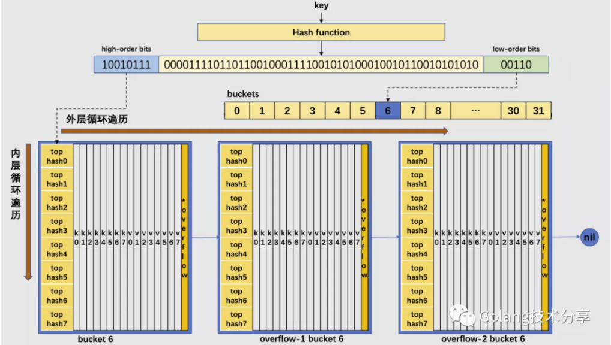
map的元素查找，对应go代码有两种形式
1 | 1 // 形式一 |
形式一的代码实现，就是上述的mapaccess1方法。此外，在源码中还有个mapaccess2方法，它的函数签名如下。
1 | 1func mapaccess2(t *maptype, h *hmap, key unsafe.Pointer) (unsafe.Pointer, bool) {} |
与mapaccess1相比，mapaccess2多了一个bool类型的返回值，它代表的是是否在map中找到了对应的key。因为和mapaccess1基本一致，所以详细代码就不再贴出。
同时，源码中还有mapaccessK方法，它的函数签名如下。
1 | 1func mapaccessK(t *maptype, h *hmap, key unsafe.Pointer) (unsafe.Pointer, unsafe.Pointer) {} |
与mapaccess1相比，mapaccessK同时返回了key和value，其代码逻辑也一致。
B
赋值Key
对于写入key的逻辑，其源码实现如下
1 | 1func mapassign(t *maptype, h *hmap, key unsafe.Pointer) unsafe.Pointer { |
通过对mapassign的代码分析之后，发现该函数并没有将插入key对应的value写入对应的内存，而是返回了value应该插入的内存地址。为了弄清楚value写入内存的操作是发生在什么时候，分析如下map.go代码。
1 | 1package main |
m[i] = 666对应的汇编代码
1 | 1$ go tool compile -S map.go |
赋值的最后一步实际上是编译器额外生成的汇编指令来完成的，可见靠 runtime 有些工作是没有做完的。所以，在go中，编译器和 runtime 配合，才能完成一些复杂的工作。同时说明，在平时学习go的源代码实现时，必要时还需要看一些汇编代码。
C
删除Key
####
理解了赋值key的逻辑，删除key的逻辑就比较简单了。本文就不再讨论该部分内容了，读者感兴趣可以自行查看src/runtime/map.go的mapdelete方法逻辑。
D
遍历map
结论：迭代 map 的结果是无序的
1 | 1 m := make(map[int]int) |
运行以上代码，我们会发现每次输出顺序都是不同的。
map遍历的过程，是按序遍历bucket，同时按需遍历bucket中和其overflow bucket中的cell。但是map在扩容后，会发生key的搬迁，这造成原来落在一个bucket中的key，搬迁后，有可能会落到其他bucket中了，从这个角度看，遍历map的结果就不可能是按照原来的顺序了（详见下文的map扩容内容）。
但其实，go为了保证遍历map的结果是无序的，做了以下事情：map在遍历时，并不是从固定的0号bucket开始遍历的，每次遍历，都会从一个随机值序号的bucket，再从其中随机的cell开始遍历。然后再按照桶序遍历下去，直到回到起始桶结束。
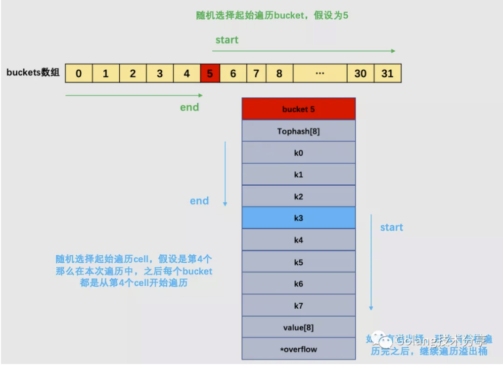
上图的例子，是遍历一个处于未扩容状态的map。如果map正处于扩容状态时，需要先判断当前遍历bucket是否已经完成搬迁，如果数据还在老的bucket，那么就去老bucket中拿数据。
注意：在下文中会讲解到增量扩容和等量扩容。当发生了增量扩容时，一个老的bucket数据可能会分裂到两个不同的bucket中去，那么此时，如果需要从老的bucket中遍历数据，例如1号，则不能将老1号bucket中的数据全部取出，仅仅只能取出老 1 号 bucket 中那些在裂变之后，分配到新 1 号 bucket 中的那些 key（这个内容，请读者看完下文map扩容的讲解之后再回头理解）。
鉴于篇幅原因，本文不再对map遍历的详细源码进行注释贴出。读者可自行查看源码src/runtime/map.go的mapiterinit()和mapiternext()方法逻辑。
这里注释一下mapiterinit()中随机保证的关键代码
1 | 1// 生成随机数 |
05
map扩容
在文中讲解装载因子时，我们提到装载因子是决定哈希表是否进行扩容的关键指标。在go的map扩容中，除了装载因子会决定是否需要扩容，溢出桶的数量也是扩容的另一关键指标。
为了保证访问效率，当map将要添加、修改或删除key时，都会检查是否需要扩容，扩容实际上是以空间换时间的手段。在之前源码mapassign中，其实已经注释map扩容条件，主要是两点:
- 判断已经达到装载因子的临界点，即元素个数 >= 桶（bucket）总数 * 6.5，这时候说明大部分的桶可能都快满了（即平均每个桶存储的键值对达到6.5个），如果插入新元素，有大概率需要挂在溢出桶（overflow bucket）上。
1 | 1func overLoadFactor(count int, B uint8) bool { |
- 判断溢出桶是否太多，当桶总数 < 2 ^ 15 时，如果溢出桶总数 >= 桶总数，则认为溢出桶过多。当桶总数 >= 2 ^ 15 时，直接与 2 ^ 15 比较，当溢出桶总数 >= 2 ^ 15 时，即认为溢出桶太多了。
1 | 1func tooManyOverflowBuckets(noverflow uint16, B uint8) bool { |
对于第2点，其实算是对第 1 点的补充。因为在装载因子比较小的情况下，有可能 map 的查找和插入效率也很低，而第 1 点识别不出来这种情况。表面现象就是计算装载因子的分子比较小，即 map 里元素总数少，但是桶数量多（真实分配的桶数量多，包括大量的溢出桶）。
在某些场景下，比如不断的增删，这样会造成overflow的bucket数量增多，但负载因子又不高，未达不到第 1 点的临界值，就不能触发扩容来缓解这种情况。这样会造成桶的使用率不高，值存储得比较稀疏，查找插入效率会变得非常低，因此有了第 2 点判断指标。这就像是一座空城，房子很多，但是住户很少，都分散了，找起人来很困难。
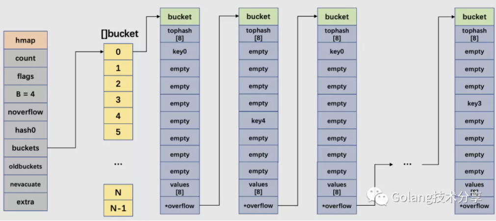
如上图所示，由于对map的不断增删，以0号bucket为例，该桶链中就造成了大量的稀疏桶。
两种情况官方采用了不同的解决方案
- 针对 1，将 B + 1，新建一个buckets数组，新的buckets大小是原来的2倍，然后旧buckets数据搬迁到新的buckets。该方法我们称之为增量扩容。
- 针对 2，并不扩大容量，buckets数量维持不变，重新做一遍类似增量扩容的搬迁动作，把松散的键值对重新排列一次，以使bucket的使用率更高，进而保证更快的存取。该方法我们称之为等量扩容。
对于 2 的解决方案，其实存在一个极端的情况：如果插入 map 的 key 哈希都一样，那么它们就会落到同一个 bucket 里，超过 8 个就会产生 overflow bucket，结果也会造成 overflow bucket 数过多。移动元素其实解决不了问题，因为这时整个哈希表已经退化成了一个链表，操作效率变成了 O(n)。但 Go 的每一个 map 都会在初始化阶段的 makemap时定一个随机的哈希种子，所以要构造这种冲突是没那么容易的。
在源码中，和扩容相关的主要是hashGrow()函数与growWork()函数。hashGrow() 函数实际上并没有真正地“搬迁”，它只是分配好了新的 buckets，并将老的 buckets 挂到了 oldbuckets 字段上。真正搬迁 buckets 的动作在 growWork() 函数中，而调用 growWork() 函数的动作是在mapassign() 和 mapdelete() 函数中。也就是插入（包括修改）、删除 key 的时候，都会尝试进行搬迁 buckets 的工作。它们会先检查 oldbuckets 是否搬迁完毕（检查 oldbuckets 是否为 nil），再决定是否进行搬迁工作。
hashGrow()函数
1 | 1func hashGrow(t *maptype, h *hmap) { |
growWork()函数
1 | 1func growWork(t *maptype, h *hmap, bucket uintptr) { |
从growWork()函数可以知道，搬迁的核心逻辑是evacuate()函数。这里读者可以思考一个问题：为什么每次至多搬迁2个bucket？这其实是一种性能考量，如果map存储了数以亿计的key-value，一次性搬迁将会造成比较大的延时，因此才采用逐步搬迁策略。
在讲解该逻辑之前，需要读者先理解以下两个知识点。
- 知识点1：bucket序号的变化
前面讲到，增量扩容（条件1）和等量扩容（条件2）都需要进行bucket的搬迁工作。对于等量扩容而言，由于buckets的数量不变，因此可以按照序号来搬迁。例如老的的0号bucket，仍然搬至新的0号bucket中。
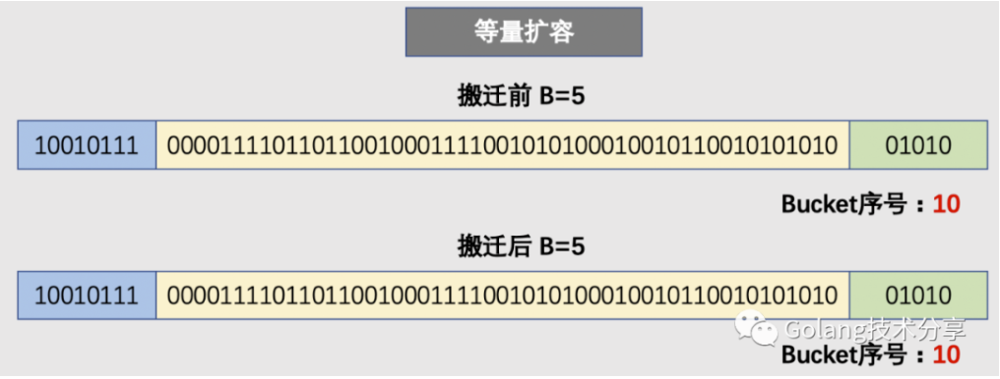
但是，对于增量扩容而言，就会有所不同。例如原来的B=5，那么增量扩容时，B就会变成6。那么决定key值落入哪个bucket的低位哈希值就会发生变化（从取5位变为取6位），取新的低位hash值得过程称为rehash。
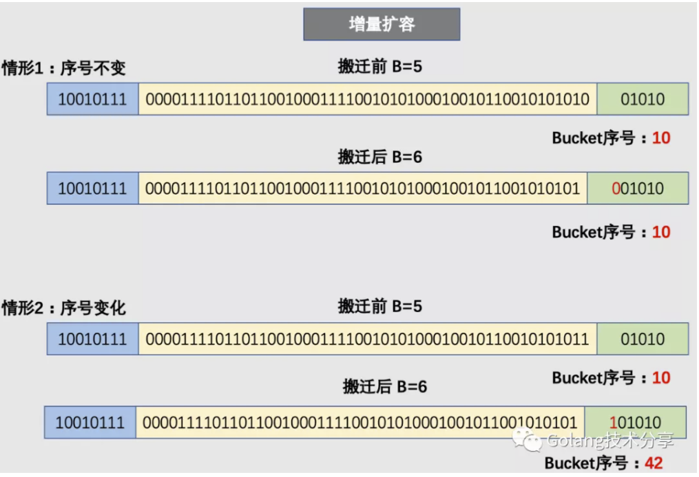
因此，在增量扩容中，某个 key 在搬迁前后 bucket 序号可能和原来相等，也可能是相比原来加上 2^B（原来的 B 值），取决于低 hash 值第倒数第B+1位是 0 还是 1。
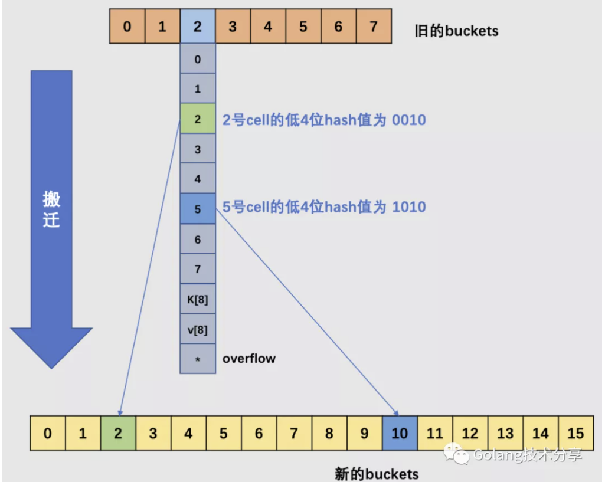
如上图所示，当原始的B = 3时，旧buckets数组长度为8，在编号为2的bucket中，其2号cell和5号cell，它们的低3位哈希值相同（不相同的话，也就不会落在同一个桶中了），但是它们的低4位分别是0010、1010。当发生了增量扩容，2号就会被搬迁到新buckets数组的2号bucket中去，5号被搬迁到新buckets数组的10号bucket中去，它们的桶号差距是2的3次方。
- 知识点2：确定搬迁区间
在源码中，有bucket x 和bucket y的概念，其实就是增量扩容到原来的 2 倍，桶的数量是原来的 2 倍，前一半桶被称为bucket x，后一半桶被称为bucket y。一个 bucket 中的 key 可能会分裂到两个桶中去，分别位于bucket x的桶，或bucket y中的桶。所以在搬迁一个 cell 之前，需要知道这个 cell 中的 key 是落到哪个区间（而对于同一个桶而言，搬迁到bucket x和bucket y桶序号的差别是老的buckets大小，即2^old_B）。
思考：为什么确定key落在哪个区间很重要？
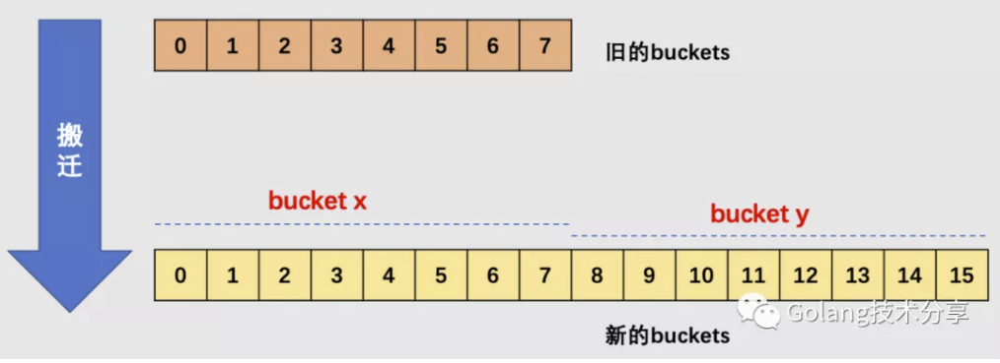
确定了要搬迁到的目标 bucket 后，搬迁操作就比较好进行了。将源 key/value 值 copy 到目的地相应的位置。设置 key 在原始 buckets 的 tophash 为 evacuatedX 或是 evacuatedY，表示已经搬迁到了新 map 的bucket x或是bucket y，新 map 的 tophash 则正常取 key 哈希值的高 8 位。
下面正式解读搬迁核心代码evacuate()函数。
evacuate()函数
1 | 1func evacuate(t *maptype, h *hmap, oldbucket uintptr) { |
代码比较长，但是文中注释已经比较清晰了，如果对map的扩容还不清楚，可以参见以下图解。
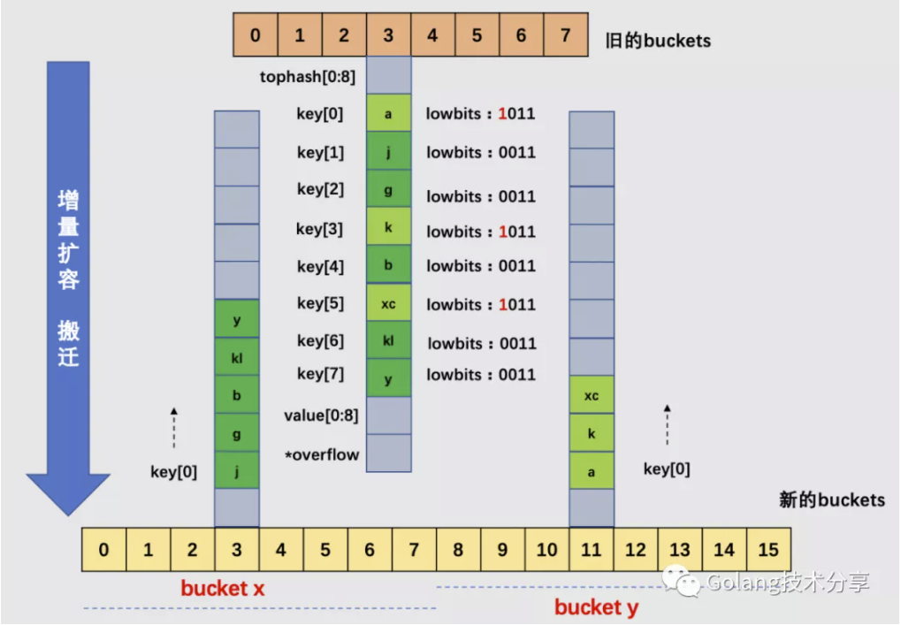
针对上图的map，其B为3，所以原始buckets数组为8。当map元素数变多，加载因子超过6.5，所以引起了增量扩容。
以3号bucket为例，可以看到，由于B值加1，所以在新选取桶时，需要取低4位哈希值，这样就会造成cell会被搬迁到新buckets数组中不同的桶（3号或11号桶）中去。注意，在一个桶中，搬迁cell的工作是有序的：它们是依序填进对应新桶的cell中去的。
当然，实际情况中3号桶很可能还有溢出桶，在这里为了简化绘图，假设3号桶没有溢出桶，如果有溢出桶，则相应地添加到新的3号桶和11号桶中即可，如果对应的3号和11号桶均装满，则给新的桶添加溢出桶来装载。
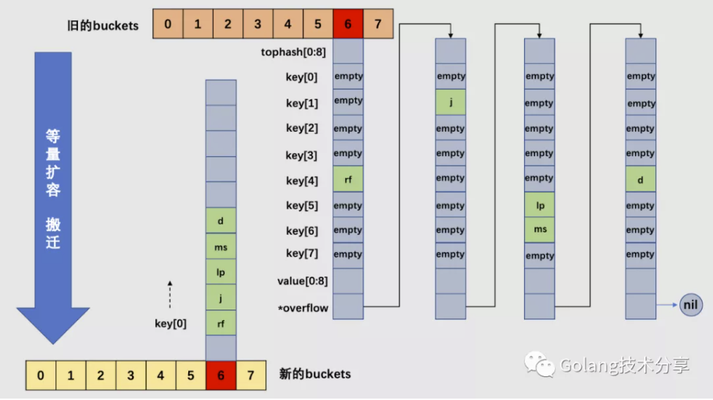
对于上图的map，其B也为3。假设整个map中的overflow过多，触发了等量扩容。注意，等量扩容时，新的buckets数组大小和旧buckets数组是一样的。
以6号桶为例，它有一个bucket和3个overflow buckets，但是我们能够发现桶里的数据非常稀疏，等量扩容的目的就是为了把松散的键值对重新排列一次，以使bucket的使用率更高，进而保证更快的存取。搬迁完毕后，新的6号桶中只有一个基础bucket，暂时并不需要溢出桶。这样，和原6号桶相比，数据变得紧密，使后续的数据存取变快。
最后回答一下上文中留下的问题：为什么确定key落在哪个区间很重要？因为对于增量扩容而言，原本一个bucket中的key会被分裂到两个bucket中去，它们分别处于bucket x和bucket y中，但是它们之间存在关系 bucket x + 2^B = bucket y （其中，B是老bucket对应的B值）。假设key所在的老bucket序号为n，那么如果key落在新的bucket x，则它应该置入 bucket x起始位置 + nbucket 的内存中去；如果key落在新的bucket y，则它应该置入 bucket y起始位置 + nbucket的内存中去。因此，确定key落在哪个区间，这样就很方便进行内存地址计算，快速找到key应该插入的内存地址。
map 总结和使用建议
01
总结
###
Go语言的map，底层是哈希表实现的，通过链地址法解决哈希冲突，它依赖的核心数据结构是数组加链表。
map中定义了2的B次方个桶，每个桶中能够容纳8个key。根据key的不同哈希值，将其散落到不同的桶中。哈希值的低位（哈希值的后B个bit位）决定桶序号，高位（哈希值的前8个bit位）标识同一个桶中的不同 key。
当向桶中添加了很多 key，造成元素过多，超过了装载因子所设定的程度，或者多次增删操作，造成溢出桶过多，均会触发扩容。
扩容分为增量扩容和等量扩容。增量扩容，会增加桶的个数（增加一倍），把原来一个桶中的 keys 被重新分配到两个桶中。等量扩容，不会更改桶的个数，只是会将桶中的数据变得紧凑。不管是增量扩容还是等量扩容，都需要创建新的桶数组，并不是原地操作的。
扩容过程是渐进性的，主要是防止一次扩容需要搬迁的 key 数量过多，引发性能问题。触发扩容的时机是增加了新元素， 桶搬迁的时机则发生在赋值、删除期间，每次最多搬迁两个 桶。查找、赋值、删除的一个很核心的内容是如何定位到 key 所在的位置，需要重点理解。一旦理解，关于 map 的源码就可以看懂了。
02
使用建议
从map设计可以知道，它并不是一个并发安全的数据结构。同时对map进行读写时，程序很容易出错。因此，要想在并发情况下使用map，请加上锁（sync.Mutex或者sync.RwMutex）。其实，Go标准库中已经为我们实现了并发安全的map——sync.Map，我之前写过文章对它的实现进行讲解，详情可以查看本公众号《深入理解sync.Map》一文。
遍历map的结果是无序的，在使用中，应该注意到该点。
通过map的结构体可以知道，它其实是通过指针指向底层buckets数组。所以和slice一样，尽管go函数都是值传递，但是，当map作为参数被函数调用时，在函数内部对map的操作同样会影响到外部的map。
另外，有个特殊的key值math.NaN，它每次生成的哈希值是不一样的，这会造成m[math.NaN]是拿不到值的，而且多次对它赋值，会让map中存在多个math.NaN的key。不过这个基本用不到，知道有这个特殊情况就可以了。
https://en.wikipedia.org/wiki/Associative_array
https://mp.weixin.qq.com/s/OHROn0ya_nWR6qkaSFmacw
https://www.cse.cuhk.edu.hk/irwin.king/_media/teaching/csc2100b/tu6.pdf
https://github.com/cch123/golang-notes/blob/master/map.md
https://zhuanlan.zhihu.com/p/66676224
https://draveness.me/golang/docs/part2-foundation/ch03-datastructure/golang-hashmap/
https://github.com/talkgo/night/issues/332